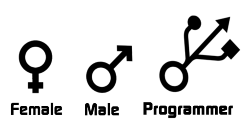

The following are some jokes about programmers. It is said that those who understand them are still working overtime.
1. A wife called her programmer husband: "On your way home from work, buy ten steamed buns. If you see a watermelon seller, buy one." That night, the husband came home holding one bun. The wife said angrily: "Why did you only buy one bun?!" The husband, terrified, muttered: "Because I really did see a watermelon seller."
2. A programmer went to an interview. The interviewer asked: "You graduated only two years ago, so how did you get three years of work experience?!" The programmer replied: "Overtime."
3. A programmer was very interested in calligraphy. After retirement, he decided to achieve something in this area. So he spent a fortune on top-quality "Four Treasures of the Study" (writing brush, ink stick, paper, and inkstone). One day after a meal, he was suddenly seized by an elegant whim. He ground ink, laid out paper, and lit fine sandalwood incense, quite in the style of Wang Xizhi and with the imposing spirit of Yan Zhenqing. He composed himself for a moment, then splashed ink, wielded his brush, and solemnly wrote a line: hello world.
4. Q: Which of Emperor Kangxi's sons do programmers hate the most? A: Yinsi. Because he is the Eighth Prince (Ba Age), which sounds like "bug".
5. A programmer had three children, named Ctrl, Alt, and Delete. If they didn't behave, the programmer only needed to press them all at the same time and they would be fine.
6. Today at the company I heard a vicious insult: "You're nothing but a wild pointer with no object!"
7. Cheng XX was in a car accident and fell into a vegetative state. The doctor said her chance of survival was only one in ten thousand, and the chance of waking up was even slimmer. Her colleagues and family did not give up. Knowing Cheng XX's obsession with testing, they recited by her side every day: "The module you tested was rolled back after going live." A miracle happened - Cheng XX woke up. Her first words were: "Are you sure that module was tested by me?" 8. A programmer drowned while swimming at the seaside. Before he died, he desperately cried for help. At that time there were many lifeguards on the beach, but no one saved him, because he kept shouting "F1!" "F1!" and nobody knew what "F1" meant.
9. The farthest distance in the world is when I am in the if and you are in the else. Although we often appear together, we never execute together.
10. I was coding when a colleague came back from the hospital with a miserable look on his face. I asked him what was wrong. He replied: "I've got rheumatoid arthritis, and I'm afraid it will be inherited by the next generation." I had question marks all over my face: "Who said rheumatoid arthritis is hereditary?" He said with a look of surprise: "Isn't a class inherited?"
11. I find the word "inn" strange. Does the person who checks in later have to check out first?
12. It is said that the key factor determining whether a programmer changes jobs is the current salary of his former colleagues.
13. The most frustrating thing for a programmer is: you stay up late working hard on an elegantly styled source file, only to have a colleague with terrible coding style modify it without signing his name, so everyone thinks you wrote it.
14. A front-end engineer said: "I went to a dating website to find a girlfriend." His friend asked: "Did you find one?" The engineer said: "I found a bug on their page."
15. C programmers look down on C++ programmers, C++ programmers look down on Java programmers, Java programmers look down on C# programmers, and C# programmers look down on UI designers. When the weekend comes, the UI designer goes out on a date with a girl, while the programmers are still working overtime!
16. It is said that when a foreigner was young, he aspired to become a great writer. What counts as great? He said: "What I write must be seen by the whole world! After reading it, they will surely become hysterical, fly into a rage, and be in utter agony!" In the end, he succeeded. He worked at Microsoft, responsible for writing the error messages displayed when the system blue-screens.
17. Essential vocabulary for programmer job applications: Understand = have heard the name; Familiar = know what it is; Proficient = have used it; Expert = have built something.
18. Two programmers were chatting. Programmer A complained: "Being a programmer is too hard. I want to change lines... What should I do?" Programmer B said: "Press Enter."
19. The four things programmers hate most: writing comments, writing documentation, others not writing comments, others not writing documentation...
20. If life deceives you, ask 50 programmers why they code; if life makes you want to die, ask 50 programmers whether their bugs have been fixed; if you feel financially strapped, ask 50 programmers whether their salaries have gone up; if you think living is boring, ask 50 programmers what they did all day!
More humor:http://www.w3cschool.cc/w3cnote/programmer-small-joke.html
Click me to share notes
<p style="font-size:14px;">Notes need to be an extension of the content of this article!</p><br> <p style="font-size:12px;"><a href="../tougao.html" target="_blank">Article submission, click here</a></p> <p style="font-size:14px;"><a href="./runoob-user-test-intro.html" target="_blank">How to get a registration invitation code</a></p> <h3 class="text-muted"><i class="fa fa-info-circle" aria-hidden="true"></i> You must <a href=".." class="runoob-pop">log in</a> before sharing notes!</h3> <p><a href="./runoob-user-test-intro.html" target="_blank">How to get a registration invitation code</a></p>